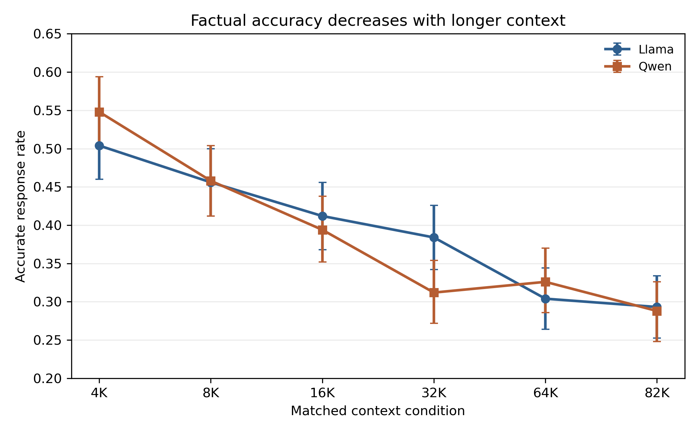
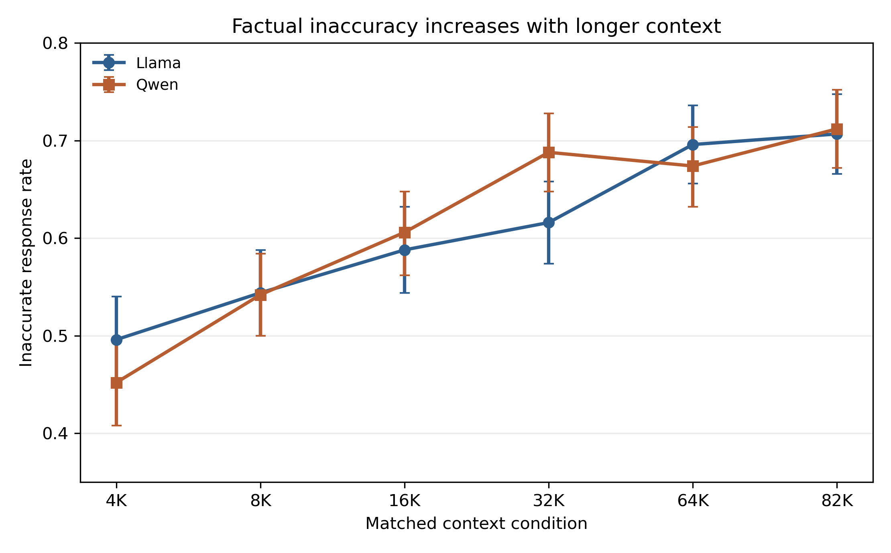
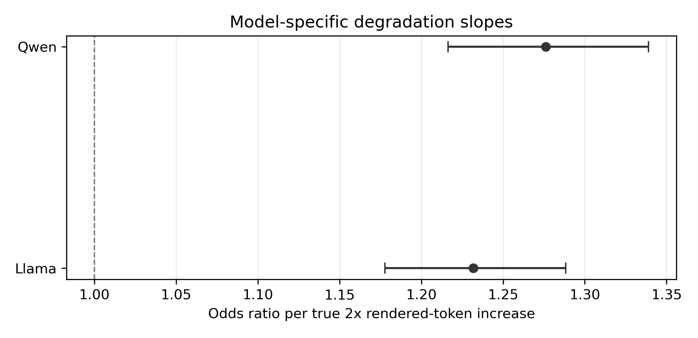
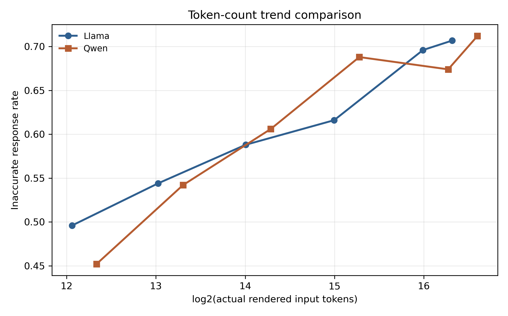
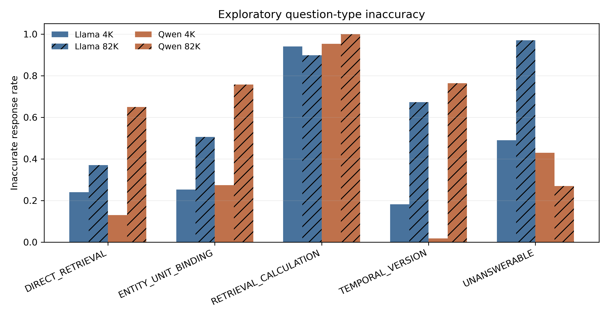
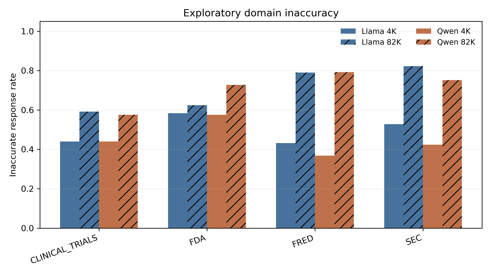
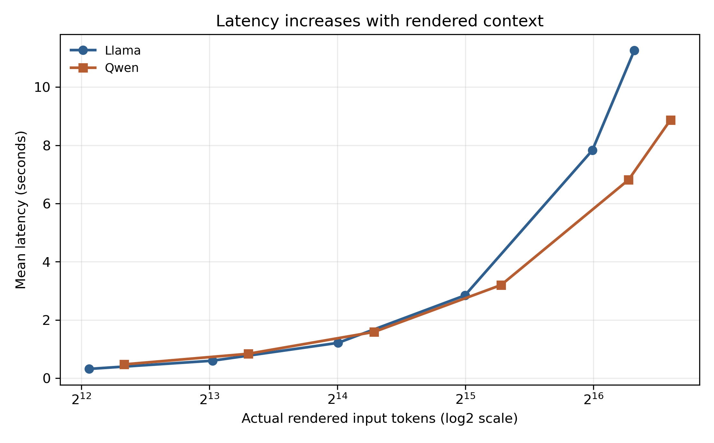

This report summarizes two completed long-context factual-reliability experiments using a shared frozen benchmark. The primary scientific outcome is binary: Accurate versus Inaccurate. CORRECT responses are Accurate; every other successfully generated factual-task outcome is Inaccurate. Runtime failures are reported separately and are not counted as factual inaccuracies.
Increasing context length substantially reduced factual accuracy in both Llama-3.2-3B-Instruct and Qwen3.5-2B. Llama inaccuracy increased from 49.6% at 4K to 70.7% at 82K; Qwen inaccuracy increased from 45.2% to 71.2%. GEE logistic models clustered by question family showed significantly increasing odds of factual inaccuracy per true doubling of rendered input tokens for both models. The model-by-context interaction was not statistically significant for overall inaccuracy, indicating no detectable difference in the overall degradation slope between the two model families in this benchmark.
Central finding. Factual accuracy decreases substantially as context length increases, and this effect replicated across two different model families. The shortest condition produced 49.6% inaccurate Llama responses and 45.2% inaccurate Qwen responses. The longest condition produced 70.7% inaccurate Llama responses and 71.2% inaccurate Qwen responses.
Llama's primary GEE odds ratio was 1.232 per true 2x increase in rendered context, 95% CI [1.178, 1.288], p = 8.66e-20. Qwen's primary GEE odds ratio was 1.276, 95% CI [1.216, 1.339], p = 2.74e-23.
The overall model x context interaction was not significant: Qwen-vs-Llama slope OR ratio 1.030, 95% CI [0.967, 1.098], p = 0.3594. This does not prove identical slopes; it means the experiment did not detect a statistically significant difference in overall degradation rates.
The central research question is how increasing context length affects factual reliability when an LLM must answer factual questions from controlled but information-rich context. The cross-model extension asks whether the Experiment D result in Llama behaviorally replicates in a different model family, Qwen.
This report intentionally frames the main result using the binary factual outcome Accurate versus Inaccurate. The detailed hallucination/grounding taxonomy is retained only as secondary diagnostic information.
Both experiments used the same frozen benchmark information and semantic task. Llama used its native Llama chat template; Qwen used its native Qwen chat template in non-thinking mode. The two models therefore did not receive byte-identical rendered prompts, but they received matched benchmark facts, questions, context construction, answer target, evidence ordering, and output contract.
The benchmark contains 500 question families and six context conditions, producing 3,000 attempted instances per model. The domains are SEC, FDA/Drugs@FDA, ClinicalTrials.gov, and FRED/ALFRED, with 125 families from each domain. There are 400 answerable and 100 unanswerable families.
Table 1. Frozen benchmark question-type distribution.
| Question Type | Families | Purpose |
|---|---|---|
| DIRECT_RETRIEVAL | 100 | Retrieve a directly stated fact |
| RETRIEVAL_CALCULATION | 150 | Retrieve values and compute a deterministic result |
| TEMPORAL_VERSION | 55 | Bind answer to the correct period/version |
| ENTITY_UNIT_BINDING | 95 | Bind entity/unit/product/series correctly |
| UNANSWERABLE | 100 | Abstain when required evidence is absent |
The six benchmark conditions are 4K, 8K, 16K, 32K, 64K, and 82K. These labels describe matched benchmark conditions, not guaranteed tokenizer-identical lengths. Statistical trend models use each model's actual log2(rendered_input_tokens), so +1 corresponds to a true doubling of rendered tokens for that model.
Experiment D used meta-llama/Llama-3.2-3B-Instruct. It produced 2,998 successful generations out of 3,000 attempts, with two CUDA OOM runtime failures at 82K.
Experiment E used Qwen/Qwen3.5-2B at revision 15852e8c16360a2fea060d615a32b45270f8a8fc. It produced 3,000 successful generations out of 3,000 attempts, with zero instance-level runtime failures.
Qwen was run with Transformers 5.14.1, PyTorch 2.5.1+cu121, CUDA runtime 12.1, NVIDIA GeForce RTX 4090, driver 550.163.01, Qwen2Tokenizer, Qwen3_5ForCausalLM, BF16, DynamicCache, SDPA, greedy decoding, and no thinking mode. The Qwen prompt version was qwen35_chat_v1, prompt hash 8b1f0e7700df4fe1. The frozen benchmark hash was dc2c4194dedb090198e6883735257908ce274bebc8611b40d958dbd026aa1fe6, and the frozen grader hash was d9282a0ccc50daba3bfd232c058dfbab63a5c19a7323d585a7c2236b3a6c4ba8.
Accurate means the deterministic grader labeled the successful response CORRECT. Inaccurate means any other successfully generated factual-task outcome. Runtime failures are separate operational failures and are not factual inaccuracies.
The primary model for each experiment was GEE logistic regression clustered by question_family_id. The outcome was INACCURATE. The predictor was log2(rendered_input_tokens), so a one-unit increase represents a true doubling of rendered input tokens. A combined long-form model tested the interaction log2(rendered_input_tokens) x model.
Table 2. Primary GEE logistic models for overall factual inaccuracy.
| Model | Coefficient | SE | OR per 2x rendered context | 95% CI | p-value | N |
|---|---|---|---|---|---|---|
| Llama-3.2-3B-Instruct | 0.208 | 0.023 | 1.232 | [1.178, 1.288] | 8.66e-20 | 2998 |
| Qwen3.5-2B | 0.244 | 0.025 | 1.276 | [1.216, 1.339] | 2.74e-23 | 3000 |
Llama factual inaccuracy increased from 49.6% at 4K to 70.7% at 82K. The primary GEE OR was 1.232 per doubling of rendered context, corresponding to approximately a 23.2% increase in the odds of factual inaccuracy.
Qwen factual inaccuracy increased from 45.2% at 4K to 71.2% at 82K. The primary GEE OR was 1.276 per doubling of rendered Qwen context, corresponding to approximately a 27.6% increase in the odds of factual inaccuracy.
Table 3. Binary Accurate/Inaccurate results by context.
| Context | Llama Accurate | Llama Inaccurate | Llama Runtime Failures | Qwen Mean Tokens | Qwen Accurate | Qwen Inaccurate | Qwen Mean Latency |
|---|---|---|---|---|---|---|---|
| 4K | 50.4% | 49.6% | 0 | 5,164 | 54.8% | 45.2% | 0.47 s |
| 8K | 45.6% | 54.4% | 0 | 10,106 | 45.8% | 54.2% | 0.84 s |
| 16K | 41.2% | 58.8% | 0 | 19,981 | 39.4% | 60.6% | 1.59 s |
| 32K | 38.4% | 61.6% | 0 | 39,736 | 31.2% | 68.8% | 3.20 s |
| 64K | 30.4% | 69.6% | 0 | 79,219 | 32.6% | 67.4% | 6.81 s |
| 82K | 29.3% | 70.7% | 2 | 99,422 | 28.8% | 71.2% | 8.87 s |


Increasing context length substantially reduced factual accuracy in both Llama-3.2-3B-Instruct and Qwen3.5-2B. The models differ in family, tokenizer, architecture, training, native chat template, and actual rendered token counts, so the comparison is behavioral rather than architectural.

The most important cross-model test is the context-by-model interaction. The interaction was not statistically significant for overall factual inaccuracy. Therefore, although Qwen's point estimate was slightly larger, this experiment does not provide evidence that the overall context-length degradation slope differs between the two models.
Table 4. Combined model interaction test for overall factual inaccuracy.
| Outcome | Interaction | Qwen-vs-Llama slope OR ratio | 95% CI | p-value | Interpretation |
|---|---|---|---|---|---|
| Inaccurate | log2(rendered_input_tokens) x model | 1.030 | [0.967, 1.098] | 0.3594 | No statistically significant difference detected |

Paired McNemar tests compared 4K against each higher context condition within the same question families. For both Llama and Qwen, 4K versus every higher context showed significant increases in overall inaccuracy after Holm correction.
Table 5. Paired McNemar tests for overall inaccuracy.
| Model | Comparison | Paired N | 4K Inaccurate | Higher Context Inaccurate | Delta | Discordant 4K=0,Higher=1 | Discordant 4K=1,Higher=0 | Raw p | Holm p |
|---|---|---|---|---|---|---|---|---|---|
| Llama | 4K vs 8K | 500 | 49.6% | 54.4% | 4.8 pp | 41 | 17 | 0.00223 | 0.00223 |
| Llama | 4K vs 16K | 500 | 49.6% | 58.8% | 9.2 pp | 66 | 20 | 6.67e-07 | 1.33e-06 |
| Llama | 4K vs 32K | 500 | 49.6% | 61.6% | 12.0 pp | 88 | 28 | 2.09e-08 | 6.27e-08 |
| Llama | 4K vs 64K | 500 | 49.6% | 69.6% | 20.0 pp | 124 | 24 | 1.89e-17 | 7.57e-17 |
| Llama | 4K vs 82K | 498 | 49.4% | 70.7% | 21.3 pp | 129 | 23 | 4.33e-19 | 2.17e-18 |
| Qwen | 4K vs 8K | 500 | 45.2% | 54.2% | 9.0 pp | 60 | 15 | 1.59e-07 | 1.59e-07 |
| Qwen | 4K vs 16K | 500 | 45.2% | 60.6% | 15.4 pp | 88 | 11 | 4.53e-16 | 9.06e-16 |
| Qwen | 4K vs 32K | 500 | 45.2% | 68.8% | 23.6 pp | 125 | 7 | 4.58e-29 | 2.29e-28 |
| Qwen | 4K vs 64K | 500 | 45.2% | 67.4% | 22.2 pp | 139 | 28 | 6.84e-19 | 2.05e-18 |
| Qwen | 4K vs 82K | 500 | 45.2% | 71.2% | 26.0 pp | 151 | 21 | 1.87e-25 | 7.50e-25 |
Question-type analyses are exploratory. Direct retrieval, temporal/version, and entity/unit binding showed clear degradation in one or both models; retrieval/calculation had high baseline error rates; unanswerable behavior differed between models.
Table 6. Exploratory question-type summary, shortest versus longest context.
| Question Type | Llama 4K Accurate | Llama 82K Accurate | Llama 4K Inaccurate | Llama 82K Inaccurate | Qwen 4K Accurate | Qwen 82K Accurate | Qwen 4K Inaccurate | Qwen 82K Inaccurate |
|---|---|---|---|---|---|---|---|---|
| DIRECT_RETRIEVAL | 76.0% | 63.0% | 24.0% | 37.0% | 87.0% | 35.0% | 13.0% | 65.0% |
| ENTITY_UNIT_BINDING | 74.7% | 49.5% | 25.3% | 50.5% | 72.6% | 24.2% | 27.4% | 75.8% |
| RETRIEVAL_CALCULATION | 6.0% | 10.1% | 94.0% | 89.9% | 4.7% | 0.0% | 95.3% | 100.0% |
| TEMPORAL_VERSION | 81.8% | 32.7% | 18.2% | 67.3% | 98.2% | 23.6% | 1.8% | 76.4% |
| UNANSWERABLE | 51.0% | 3.0% | 49.0% | 97.0% | 57.0% | 73.0% | 43.0% | 27.0% |

Domain analyses are exploratory. Both models showed higher inaccuracy at 82K than 4K across SEC, FDA, ClinicalTrials, and FRED/ALFRED, with the magnitude differing by model and domain.
Table 7. Exploratory domain summary, shortest versus longest context.
| Domain | Llama 4K Accurate | Llama 82K Accurate | Llama 4K Inaccurate | Llama 82K Inaccurate | Qwen 4K Accurate | Qwen 82K Accurate | Qwen 4K Inaccurate | Qwen 82K Inaccurate |
|---|---|---|---|---|---|---|---|---|
| CLINICAL_TRIALS | 56.0% | 40.8% | 44.0% | 59.2% | 56.0% | 42.4% | 44.0% | 57.6% |
| FDA | 41.6% | 37.6% | 58.4% | 62.4% | 42.4% | 27.2% | 57.6% | 72.8% |
| FRED | 56.8% | 21.0% | 43.2% | 79.0% | 63.2% | 20.8% | 36.8% | 79.2% |
| SEC | 47.2% | 17.7% | 52.8% | 82.3% | 57.6% | 24.8% | 42.4% | 75.2% |

Llama had 3,000 attempted generations, 2,998 successes, and two CUDA OOM failures at 82K. Qwen had 3,000 attempted generations, 3,000 successes, and zero instance-level runtime failures. Qwen full inference had process-level segmentation faults after flushed rows at 943, 1831, 1846, and 2952; the run resumed with identical pinned settings and skipped completed IDs. These process interruptions are not counted as factual failures. Transformers also fell back from Qwen's optional fast path to the torch implementation because optional packages were unavailable.
Table 8. Latency and rendered-token summaries.
| Context | Llama Mean Tokens | Llama Mean Latency | Qwen Mean Tokens | Qwen Mean Latency |
|---|---|---|---|---|
| 4K | 4,273 | 0.32 s | 5,164 | 0.47 s |
| 8K | 8,331 | 0.60 s | 10,106 | 0.84 s |
| 16K | 16,442 | 1.21 s | 19,981 | 1.59 s |
| 32K | 32,671 | 2.84 s | 39,736 | 3.20 s |
| 64K | 65,126 | 7.83 s | 79,219 | 6.81 s |
| 82K | 81,745 | 11.26 s | 99,422 | 8.87 s |

The deterministic grader also categorized inaccuracies into detailed failure types. These analyses are secondary diagnostics and do not dominate the primary scientific framing. They suggest that the broad Accurate/Inaccurate degradation can arise from different mechanisms across models.
Table 9. Secondary detailed error taxonomy, 4K to 82K changes.
| Error Type | Llama 4K | Llama 82K | Llama Delta | Qwen 4K | Qwen 82K | Qwen Delta |
|---|---|---|---|---|---|---|
| CALCULATION_ERROR | 12 | 13 | 1 | 6 | 2 | -4 |
| FAILED_TO_ABSTAIN | 49 | 97 | 48 | 43 | 27 | -16 |
| UNNECESSARY_ABSTENTION | 11 | 10 | -1 | 54 | 190 | 136 |
| UNSUPPORTED_VALUE | 122 | 104 | -18 | 99 | 70 | -29 |
| WRONG_ENTITY | 32 | 47 | 15 | 11 | 33 | 22 |
| WRONG_FIELD | 1 | 15 | 14 | 0 | 14 | 14 |
| WRONG_PERIOD | 6 | 45 | 39 | 6 | 15 | 9 |
| WRONG_SERIES_VARIANT | 2 | 2 | 0 | 0 | 0 | 0 |
| WRONG_UNIT | 3 | 1 | -2 | 2 | 0 | -2 |
| WRONG_VERSION | 10 | 18 | 8 | 5 | 5 | 0 |
Both models show strong factual-reliability degradation with longer context, and the degradation is statistically strong within each model. The overall context-length slopes are not significantly different between Llama and Qwen, so the observed degradation replicated behaviorally across two model families. This study does not identify the internal architectural cause.
Tokenization and prompt-template differences prevent claiming that the two models saw byte-identical rendered prompts. Nevertheless, they received the same frozen benchmark information and semantic task under their native templates. A third model family would be a natural next step for assessing broader generalizability.
Across two independently trained model families, increasing context length substantially reduced factual accuracy. Llama-3.2-3B-Instruct increased from 49.6% inaccurate at the shortest context condition to 70.7% at the longest, while Qwen3.5-2B increased from 45.2% to 71.2%. GEE models showed significantly increasing odds of factual inaccuracy with each doubling of rendered context for both models, and the model-by-context interaction was not significant. These results provide cross-model evidence that longer context can reduce factual reliability even when the information required to answer the task is held within a controlled benchmark.
dc2c4194dedb090198e6883735257908ce274bebc8611b40d958dbd026aa1fe6d9282a0ccc50daba3bfd232c058dfbab63a5c19a7323d585a7c2236b3a6c4ba815852e8c16360a2fea060d615a32b45270f8a8fc8b1f0e7700df4fe14be954af552a89b9e8606d227e3c33125532194dc7c6cf6d4758e88f977d08a1598b00d7ab9c62c82f55ea08dd3967c3ae66c4cc9f0708fae2e6dcfe46b1ad7e155f80ec3bf284a7928ede0d24b491a972540b77dfe01d98eb622825c9c06a78Exact source CSV files copied into the report output directory contain the full GEE tables, paired tests, subgroup summaries, latency summaries, and secondary error diagnostics. The DOCX and manifest hashes are recorded in report_manifest.json.